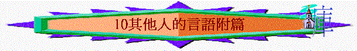
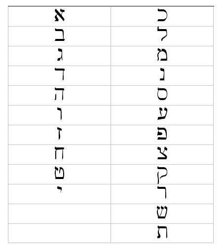

|
所羅門箴言第一集 |
所羅門箴言第二集 |
所羅門箴言第三集 |
其他人的言語附篇 |
|
1 - 9 |
10-24 |
25-29 |
30-31 |
一.亞古珥的言語(30)
「雅基的兒子亞古珥的言語就是真言。這人對以鐵和烏甲說：」30:1
～亞古珥不是以色列人的名，在其他經文沒記載，他可能是外邦人，但卻認識耶和華
～「以鐵和烏甲」也不知是甚麼人，可能是亞古珥的學生
1.屬靈的認知與追求
A.在認識神上----知道自己的有限
a.知道自己的平庸
「我比眾人更蠢笨，也沒有人的聰明。」30:2
b.對神所知的有限
「我沒有學好智慧，也不認識至聖者。誰昇天又降下來？誰聚風在掌握中？誰包水在衣服裡？誰立定地的四極？他名叫什麼？他兒子名叫什麼？你知道嗎？」30:3-4
(1)對祂本身所知有限
(2)對祂作為所知有限
(3)對祂名字所知有限
～他不覺得自己已學好智慧，特別對屬靈的事情上(認識神上)，仍是愚昧的
～他知道自己的有限及無知，不能全知這位掌管天地的神
B.在神話語上----知道神言的寶貴
「神的言語句句都是煉淨的；投靠他的，他便作他們的盾牌。他的言語，你不可加添，恐怕他責備你，你就顯為說謊言的。」30:5-6
a.煉淨
b.可靠
c.完全
～沒有可加添的
C.在聖潔呼求上----逃避將來的軟弱
a.第一個呼求----遠離虛假和謊言
「我求你兩件事，在我未死之先，不要不賜給我：求你使虛假和謊言遠離我；使我也不貧窮也不富足；賜給我需用的飲食，」30:7-8
b.第二個呼求----不窮不富的生活
「求你使虛假和謊言遠離我；使我也不貧窮也不富足；賜給我需用的飲食，恐怕我飽足不認你，說：耶和華是誰呢？又恐怕我貧窮就偷竊，以致褻瀆我神的名。」30:8-9
(1)怕不認神
(2)怕褻瀆神
2.屬世的體會與警覺
A.可惡的行為
～多用「有一宗人」來反映社會的罪行
a.讒謗別人
「你不要向主人讒謗僕人，恐怕他咒詛你，你便算為有罪。」30:10
b.咒詛父母
「有一宗人（宗：原文作代；下同），咒詛父親，不給母親祝福。」30:11
c.自以為義
「有一宗人，自以為清潔，卻沒有洗去自己的污穢。」30:12
d.眼目高傲
「有一宗人，眼目何其高傲，眼皮也是高舉。」30:13
e.欺壓窮人
「有一宗人，牙如劍，齒如刀，要吞滅地上的困苦人和世間的窮乏人。」30:14
f.永不知足
「螞蟥有兩個女兒，常說：給呀，給呀！有三樣不知足的，連不說「夠的」共有四樣：就是陰間和石胎，浸水不足的地，並火。」30:15-16
～螞蟥即水蛭，吸取人血的
～石胎----可能指胎兒死腹中，也指一個婦人多年未有生育
g.藐視父母
「戲笑父親、藐視而不聽從母親的，他的眼睛必為谷中的烏鴉啄出來，為鷹雛所吃。」30:17
B.自然的啟發
～用自然界及世間的事來反映現實的問題
～用「三樣」及「連xx」共有四樣的格式
～高潮在第四樣中
a.測不透的啟發----指向掩飾淫行
「就是鷹在空中飛的道；蛇在磐石上爬的道；船在海中行的道；男與女交合的道。淫婦的道也是這樣：他吃了，把嘴一擦就說：我沒有行惡。」31:19-20
～大自然的事物有時發生之後，人難尋回其踪，而行淫也一樣，人行了淫後，會掩飾其惡行，說自己沒行惡，旁人也難發現他所行的
b.擔不起的啟發----指向喧賓奪主
「使地震動的有三樣，連地擔不起的共有四樣：就是僕人作王；愚頑人吃飽；醜惡的女子出嫁；婢女接續主母。」31:21-23
～醜女----原文為「被恨」的女子
～四種不同情況同樣表達人喧賓奪主
c.甚聰明的啟發----指向不輕看己
「地上有四樣小物，卻甚聰明：螞蟻是無力之類，卻在夏天預備糧食。沙番是軟弱之類，卻在磐石中造房。蝗蟲沒有君王，卻分隊而出。守宮用爪抓牆，卻住在王宮。」31:24-28
～沙番即石獾，細小動物，屬鼠類，也似兔，常隱居岩穴中，守宮又名壁虎
～即或牠們也是微小及軟弱，但牠們懂得預備、組織及投靠堅固的地方，也可成為聰明的生物
d.威武者的啟發----指向王者威武
「步行威武的有三樣，連行走威武的共有四樣：就是獅子，乃百獸中最為猛烈、無所躲避的，獵狗，公山羊，和無人能敵的君王。」30:29-31
C.預先的禁止
「你若行事愚頑，自高自傲，或是懷了惡念，就當用手摀口。搖牛奶必成奶油；扭鼻子必出血。照樣，激動怒氣必起爭端。」30:32-33
～若人自知自己是愚頑、高傲、有惡名者，但禁止自己出惡言，因為終會引起爭端，如搖牛奶會引致奶油，扭鼻子必出血，人多激動而發出惡言，必起爭端
二.利慕伊勒王母親的教訓(31:1-9)
「利慕伊勒王的言語，是他母親教訓他的真言。」31:1
～利慕伊勒王不是以色列王，他母親留下教訓他的真言
1.不放縱情慾
「不要將你的精力給婦女；也不要有敗壞君王的行為。」31:3
2.不貪求美酒
「利慕伊勒啊，君王喝酒，君王喝酒不相宜；王子說濃酒在那裡也不相宜；恐怕喝了就忘記律例，顛倒一切困苦人的是非。可以把濃酒給將亡的人喝，把清酒給苦心的人喝，讓他喝了，就忘記他的貧窮，不再記念他的苦楚。」31:4-7
3.按公義判斷
「你當為啞巴（或作：不能自辯的）開口，為一切孤獨的伸冤。你當開口按公義判斷，為困苦和窮乏的辨屈。」31:8-9
三.才德婦人的說明
～31:10-31是一首字母離合詩(每段首句均用不同的希伯來文字母開始，從第一個順序至最後一個字母)
～作者可能是希伯來人，未必是利慕伊勒王母親的言語，內容論及才德婦人的特點
1.她的價值
A.勝過珍珠
「才德的婦人誰能得著呢？他的價值遠勝過珍珠。」31:10
B.使家無缺
「他丈夫心裡倚靠他，必不缺少利益；」31:11
C.使夫有益
「他一生使丈夫有益無損。」31:12
2.她的才德
A.甘心作工
「他尋找羊羢和麻，甘心用手做工。」31:13
B.早作準備
「他好像商船從遠方運糧來，未到黎明他就起來，把食物分給家中的人，將當做的工分派婢女。」31:14-15
C.精明投資
「他想得田地就買來；用手所得之利栽種葡萄園。」31:16
D.精力充沛
「他以能力束腰，使膀臂有力。」31:17
E.殷勤作工
「他覺得所經營的有利；他的燈終夜不滅。他手拿撚線竿，手把紡線車。」31:18-19
F.幫補窮人
「他張手賙濟困苦人，伸手幫補窮乏人。」31:20
G.未雨綢繆
「他不因下雪為家裡的人擔心，因為全家都穿著朱紅衣服。他為自己製作繡花毯子；他的衣服是細麻和紫色布做的。」31:21-22
～她及早已為家人預備衣服，「朱紅衣服」是高貴的象徵
H.高舉丈夫
「他丈夫在城門口與本地的長老同坐，為眾人所認識。」31:23
～她將高貴的衣服加在丈夫及自己身上，令丈夫也被高舉
I.善於賺錢
「他做細麻布衣裳出賣，又將腰帶賣與商家。」31:24
J.充滿威榮
「能力和威儀是他的衣服；他想到日後的景況就喜笑。」31:25
K.言中有慧
「他開口就發智慧；他舌上有仁慈的法則。」31:26
L.不好閒懶
「他觀察家務，並不吃閒飯。」31:27
3.她的榮耀
A.得家人稱讚
「說：才德的女子很多，惟獨你超過一切。」31:29
B.得別人稱讚
「艷麗是虛假的，美容是虛浮的；惟敬畏耶和華的婦女必得稱讚。願他享受操作所得的；願他的工作在城門口榮耀他。」31:30-31
希伯來文字母的寫法

http://hebrew.fhl.net/isaclass/write.html